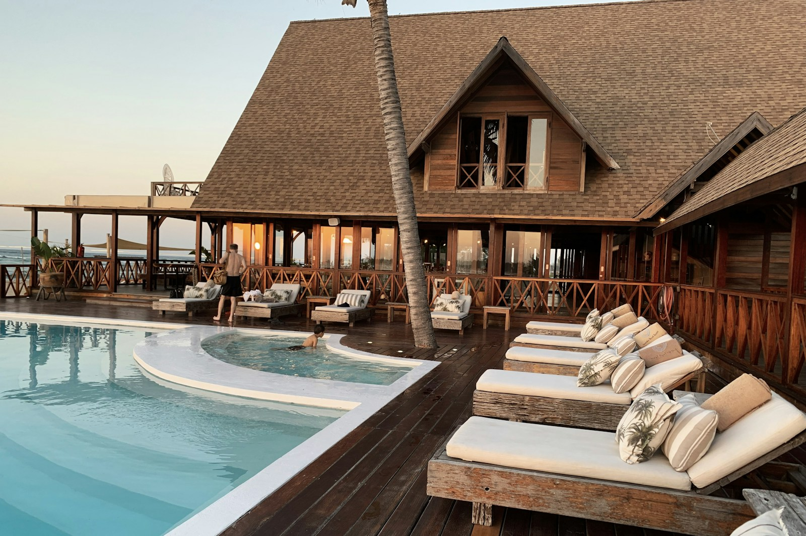

Garden Studio
A tucked-away room with a private terrace and space for two.
32 m² · 1–2 guests · from 180 concept credits / night
A house shaped by the coast.
A stay shaped around you.
Salt in the air. A book left open. Light moving slowly across the room. Dune House is a hospitality concept built around the simple pleasure of having nowhere else to be.
This is an imagined coastal retreat: thoughtful rooms, long tables and an unhurried rhythm. Explore the idea, then make the stay your own.
Build a sample stay ↗Three imagined ways to settle in.
Every detail, intentionally quiet.

A tucked-away room with a private terrace and space for two.
32 m² · 1–2 guests · from 180 concept credits / nightA generous living space, imagined with the sea always in view.
54 m² · 1–3 guests · from 260 concept credits / nightA self-contained residence for slow gatherings and longer stays.
90 m² · 1–4 guests · from 390 concept credits / night07:30Follow the light.
12:15Stay for lunch.
18:40Watch the horizon.
An imagined rhythm. No schedule required.
Explore a sample stay in this interactive concept. All rates and options are illustrative. Nothing is reserved.